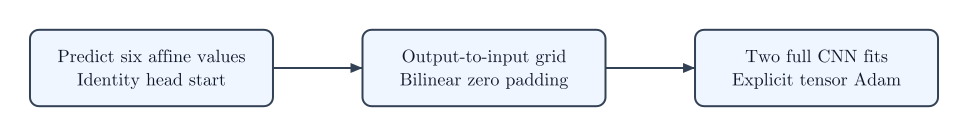
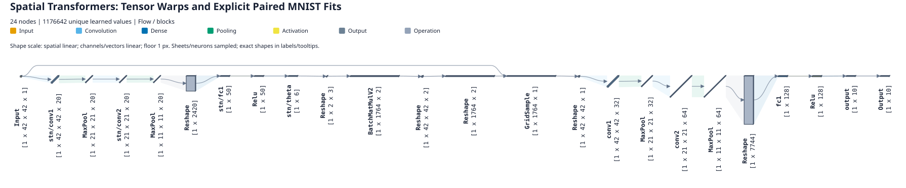
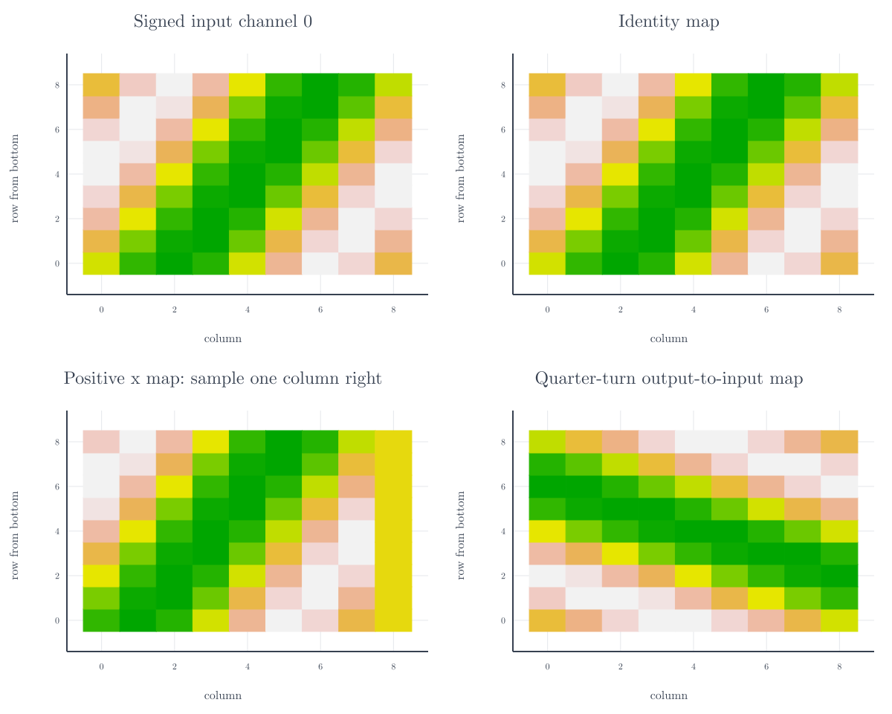
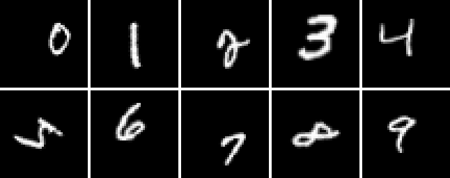
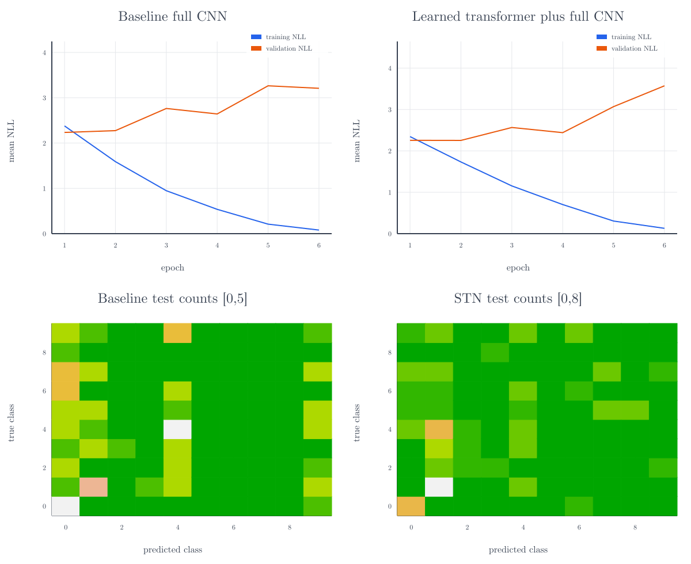
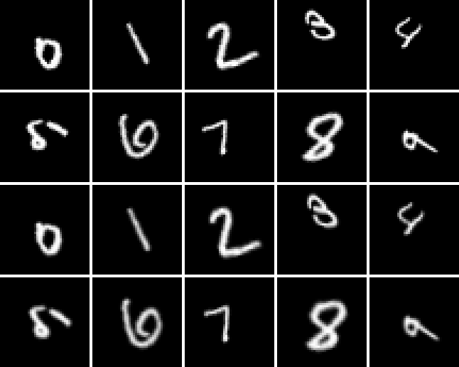
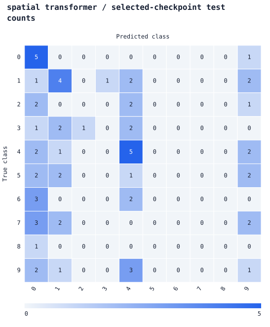
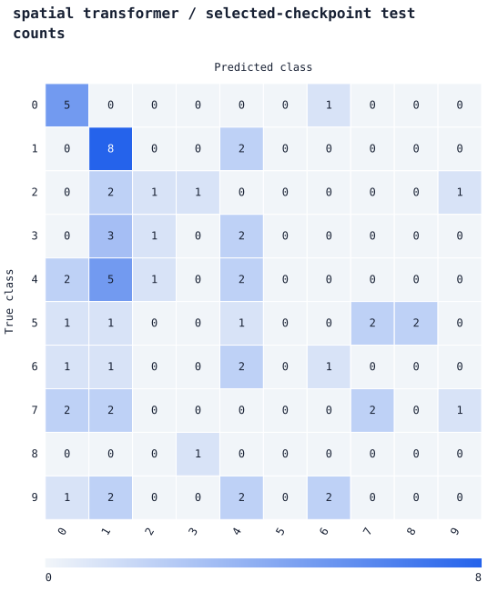

Spatial Transformers: Tensor Warps and Explicit Paired MNIST Fits
Abstract
A localization network predicts where an affine grid samples an image. We verify sampling values and all affine derivatives, generate distorted MNIST entirely with tensors, then show every Adam update of full classifiers with and without a learned transformer.
Source example: examples/cpp/source/nn/1_convolutional_neural_networks/1.5_attention_and_modern_convnets/spatial_transformer.cpp.
The method
Theta is a row-major 2×3 OUTPUT-TO-INPUT affine map. Coordinates run from −1 to1 at the outer pixel centres (align_corners=true); bilinear samples outside the image read zero. A positive x translation therefore samples farther right and moves visible content LEFT. A 9×9 fixture checks identity, a one-pixel translation and a quarter turn against pixel values. All six derivatives of a generic fractional map agree with Float64 central differences. At exact integer pixel coordinates the core sampler uses symmetric one-sided slopes; the legacy floor-gather implementation could pick one side by roundoff. Learned identity starts are therefore value-compatible but need not have identical derivative trajectories.
Localization uses 5×5/20/ReLU/SAME-pool, another 5×5/20/ReLU/pool, dense 50/ReLU and dense 6. The final head has zero weights and bias (1,0,0,0,1,0), so its initial theta is identity. Sampling agrees within coordinate roundoff. At42 pixels it has 131896 parameters. The zero head initially blocks gradients to earlier localization filters; head updates can activate those paths. There is no BN/dropout or bound on theta. A transform can zoom/crop off canvas, where blank sampling can lose informative gradients; the fit reports its selected blank fraction.
The data factory replaces the source's HOST preprocessing with tensor arithmetic. It draws angles within±45 degrees, scales .7–1.2 and centre translations within room computed from 14*scale*(abs(cos)+abs(sin)) on a 42-pixel canvas. It forms inverse normalized coordinates, bilinearly samples, rounds positive pixel values with floor(255*x+.5), clamps0..255 and divides255. Very large rotated squares may still crop. This detached dataset generation is separate from the differentiable learned transformer. Tensor RNG draws preserve ranges/distributions but differ from the source's interleaved std::mt19937_64 sequence; bitwise-identical distorted images are not claimed. Development/test use independent seeds 101/202.
Both models use the full source CNN: biased He-uniform 5×5/32/ReLU/pool,5×5/64/ReLU/pool, Glorot dense 128/ReLU and ten logits. Ceiling pools give11×11×64 features. Baseline learns 1044746 scalars; adding localization gives 1176642. Architecture-order initialization consumes different random draws, so equal seeds do not imply identical classifier weights. All model computation, affine coefficients, preprocessing, losses and updates use the tensor library.
The visible paired fits use 128 fit/64 validation/64 official-test digits and 6 batch-eight epochs of Adam(.001) (kept short so both fits run in seconds), explicit kernel L2=.0001/2 and no further augmentation. The same fixed distorted cohorts enter both models. Validation selects parameters separately; no moving BN state exists. The final gallery reloads the selected STN and shows actual test warps without supervised geometric inversion. These bounded single-seed fits cannot establish benchmark superiority, reproduce the source's much larger schedule or guarantee recovery of the true pose.
The concept diagram below is drawn by dm::graphics::Diagram. Its editable C++
source is the complete block below; regeneration uses the same datamunge toolchain
as the numerical examples. Exports consume the saved local SVG.
#include <dm/dm.hpp>
int main() {
std::filesystem::create_directories("build");
dm::graphics::Diagram diagram;
diagram.node("n0", {0.0, 0}, "Predict six affine values\nIdentity head start");
diagram.node("n1", {5.2, 0}, "Output-to-input grid\nBilinear zero padding");
diagram.node("n2", {10.4, 0}, "Two full CNN fits\nExplicit tensor Adam");
diagram.edge("n0", "n1").edge("n1", "n2");
diagram.save_svg("build/spatial_transformer_concept.svg");
}
Executed tensor architecture
This figure executes the inference configuration shown in the code, using a zero-valued shape probe without fitting or loading a checkpoint. Named stage boundaries group whole subgraphs where available; other nodes retain functional-layer detail. Exact batch-inclusive shapes and reachable parameter totals come from the trace. Shared linear scales map spatial dimensions and channel counts to blocks; the one-pixel visibility floor is disclosed in the legend. Labels use compact monospace text, rotate counterclockwise and sit beside their own glyphs. Arrows flow left to right; wide diagrams scroll at native size on the website.
#include <dm/dm.hpp>
int main() {
namespace n = dm::nn;
namespace m = n::models;
n::set_num_threads(2);
std::filesystem::create_directories("build");
n::ParameterStore p(17);
n::Module architecture_model(
[&](const n::Tensor& image) { return m::StnMnistClassifier(p, image, true).logits; },
"Spatial Transformers: Tensor Warps and Explicit Paired MNIST Fits");
n::ModelPlotOptions options;
options.style = n::ModelPlotStyle::Flow;
options.detail = n::ModelPlotDetail::Blocks;
options.labels = {.type = n::ModelPlotLabel::NameAndShape, .size = 12, .wrap = 24};
options.spacing = {.layer = 24, .lane = 12, .label = 8, .margin = 20};
options.sizing.spatial_size = 96;
options.sizing.channel_size = 42;
options.sizing.minimum_extent = 1;
options.opacity = .8;
const auto diagram = architecture_model.plot(n::zeros({1, 42, 42, 1}), options);
diagram.save_svg("build/spatial_transformer_architecture.svg");
std::print(
"{} displayed nodes; {} reachable learned values.\n",
diagram.nodes().size(),
diagram.parameter_count());
}24 displayed nodes; 1176642 reachable learned values.

Coordinate values and derivatives
#include <dm/dm.hpp>
int main() {
namespace n = dm::nn;
const auto type = n::DType::Float64;
const auto x = n::sin(.37 * n::arange(0, 9 * 9 * 2).to(type) + .2).reshape({1, 9, 9, 2});
auto layout = dm::graphics::RLayout::create(2, 2);
auto channel = [](const n::Tensor &t) {
return n::slice_axis(t, 3, 0, 1).reshape({9, 9});
};
layout.add(n::plot_tensor_map(channel(x), -1, 1).title("Signed input channel 0"));
for (int transform = 0; transform < 3; ++transform) {
const auto theta =
n::from_vector(transform == 0 ? std::vector<double>{1, 0, 0, 0, 1, 0}
: transform == 1 ? std::vector<double>{1, 0, .25, 0, 1, 0}
: std::vector<double>{0, -1, 0, 1, 0, 0},
{1, 6});
const auto y = n::models::AffineSample(x, theta, 9, 9);
for (int row = 0; row < 9; ++row)
for (int col = 0; col < 9; ++col)
for (int ch = 0; ch < 2; ++ch) {
const int r = transform == 2 ? col : row,
c = transform == 2 ? 8 - row : col + (transform == 1);
const double expected =
(r >= 0 && r < 9 && c >= 0 && c < 9) ? x.at({0, r, c, ch}) : 0;
if (std::abs(y.at({0, row, col, ch}) - expected) > 1e-12)
return 1;
}
layout.add(n::plot_tensor_map(channel(y), -1, 1)
.title(transform == 0 ? "Identity map"
: transform == 1 ? "Positive x map: sample one column right"
: "Quarter-turn output-to-input map"));
}
const auto weights = n::sin(.31 * n::arange(0, 9 * 9 * 2).to(type) + .4).reshape(x.shape());
const auto original =
n::from_vector(std::vector<double>{.93, .11, .047, -.083, 1.06, -.031}, {1, 6});
const auto theta = original.detach().requires_grad_();
const auto derivative =
n::grad(n::sum(n::models::AffineSample(x, theta, 9, 9) * weights), {theta})[0];
double error = 0;
{
n::NoGradGuard guard;
const double h = 1e-6;
for (int i = 0; i < 6; ++i) {
const auto direction =
n::one_hot(n::from_vector(std::vector<int64_t>{i}), 6, 1, 0, type).reshape({1, 6});
const double plus = n::sum(n::models::AffineSample(x, original + h * direction, 9, 9) *
weights)
.item(),
minus = n::sum(n::models::AffineSample(x, original - h * direction, 9, 9) *
weights)
.item();
error = std::max(error, std::abs(derivative.at({0, i}) - (plus - minus) / (2 * h)));
}
}
if (error > 1e-7)
return 1;
std::filesystem::create_directories("build");
layout.size(1200, 960).fit_panels().save_svg("build/spatial_transformer_sampling.svg");
std::print("Aligned-corners identity/one-pixel translation/quarter turn match pixel oracles "
"to 1e-12. All six generic affine derivatives match central differences; max "
"absolute error {:.12f}. Fractional test points avoid integer boundaries.\n",
error);
}Aligned-corners identity/one-pixel translation/quarter turn match pixel oracles to 1e-12. All six generic affine derivatives match central differences; max absolute error 0.000000003394. Fractional test points avoid integer boundaries.

Full topology and initialization gradients
#include <dm/dm.hpp>
int main() {
namespace n = dm::nn;
const auto type = n::DType::Float64;
n::ParameterStore p(17, type);
const auto x =
(.5 + .3 * n::sin(.37 * n::arange(0, 2 * 42 * 42).to(type))).reshape({2, 42, 42, 1});
const auto initial = n::models::SpatialTransformer(p, "stn", x);
const auto identity = n::from_vector(std::vector<double>{1, 0, 0, 0, 1, 0}, {1, 6});
if (p.count() != 131896 || n::max(n::abs(initial.theta - identity)).item() != 0 ||
n::max(n::abs(initial.output - x)).item() > 1e-12)
return 1;
const auto gradients = n::grad(n::mean(n::square(initial.output)), p.parameters());
const auto names = p.names();
double head = 0;
for (size_t i = 0; i < gradients.size(); ++i) {
const double norm = n::sum(n::abs(gradients[i])).item();
if (names[i].find("/theta/") == std::string::npos && norm != 0)
return 1;
if (names[i].find("/theta/") != std::string::npos)
head += norm;
}
if (head == 0)
return 1;
n::set_num_threads(2);
for (bool transformer : {false, true}) {
n::ParameterStore model(17);
const auto out =
n::models::StnMnistClassifier(model, x.to(n::DType::Float32), transformer);
if (model.count() != (transformer ? 1176642 : 1044746) ||
out.logits.shape() != n::Shape{2, 10})
return 1;
const auto derivatives = n::grad(n::mean(n::square(out.logits)), model.parameters());
for (const auto &d : derivatives)
if (!std::isfinite(n::sum(n::abs(d)).item()))
return 1;
std::print(
"Transformer={}: {} full learned scalars, {} finite parameter-tensor gradients.\n",
transformer, model.count(), derivatives.size());
}
std::print(
"Localization has 131896 scalars at 42 pixels. Its zero-weight identity head initially "
"blocks interior localization gradients; head derivatives are nonzero, and native tests "
"activate the head to check interior gradients. No moving BN state exists.\n");
}Transformer=false: 1044746 full learned scalars, 8 finite parameter-tensor gradients. Transformer=true: 1176642 full learned scalars, 16 finite parameter-tensor gradients. Localization has 131896 scalars at 42 pixels. Its zero-weight identity head initially blocks interior localization gradients; head derivatives are nonzero, and native tests activate the head to check interior gradients. No moving BN state exists.
Original and tensor-distorted data
#include <dm/dm.hpp>
int main() {
namespace n = dm::nn;
std::filesystem::path cache;
if (const auto *p = std::getenv("DATAMUNGE_DATA_DIR"))
cache = p;
else if (const auto *p = std::getenv("XDG_CACHE_HOME"))
cache = std::filesystem::path(p) / "datamunge/datasets";
else
cache = std::filesystem::path(std::getenv("HOME")) / ".cache/datamunge/datasets";
dm::datasets::fetch("mnist", (cache / "mnist").string());
const auto data = n::load_mnist((cache / "mnist").string(), "train");
const auto images = data.images, labels = data.labels;
std::vector<int64_t> rows;
for (int cls = 0; cls < 10; ++cls) {
for (int64_t row = 0; row < labels.numel(); ++row)
if (labels.at({row}) == cls) {
rows.push_back(row);
break;
}
}
if (rows.size() != 10)
return 1;
std::filesystem::create_directories("build");
n::save_image_grid(n::take_rows(images, rows), "build/spatial_transformer_inputs.png", 5, 0.,
1., 4, 1., 4);
std::print("One original cached training image per class, IDs 0..4 then 5..9.\n");
}One original cached training image per class, IDs 0..4 then 5..9.

#include <dm/dm.hpp>
int main() {
namespace n = dm::nn;
std::filesystem::path cache;
if (const auto *p = std::getenv("DATAMUNGE_DATA_DIR"))
cache = p;
else if (const auto *p = std::getenv("XDG_CACHE_HOME"))
cache = std::filesystem::path(p) / "datamunge/datasets";
else
cache = std::filesystem::path(std::getenv("HOME")) / ".cache/datamunge/datasets";
dm::datasets::fetch("mnist", (cache / "mnist").string());
const auto data = n::load_mnist((cache / "mnist").string(), "train");
const auto source = n::slice_axis(data.images, 0, 0, 192),
labels = n::slice_axis(data.labels, 0, 0, 192);
n::Generator generator(101);
const auto distorted = n::models::DistortMnist(source, generator);
std::vector<int64_t> rows;
for (int digit = 0; digit < 10; ++digit) {
bool found = false;
for (int row = 0; row < 192; ++row)
if (labels.at({row}) == digit) {
rows.push_back(row);
found = true;
break;
}
if (!found)
return 1;
}
std::filesystem::create_directories("build");
n::save_image_grid(n::take_rows(distorted.images, rows),
"build/spatial_transformer_distorted.png", 5, 0., 1., 4, 1., 3);
std::print("Tensor-generated 42x42 distorted MNIST, seed101 on the same first192 "
"development rows as fitting. Class IDs0-4 then5-9. Angles +/-45 degrees, zoom "
".7-1.2, room-limited translations; normalized uint8-like output. Tensor RNG "
"differs from the legacy interleaved host sequence.\n");
}Tensor-generated 42x42 distorted MNIST, seed101 on the same first192 development rows as fitting. Class IDs0-4 then5-9. Angles +/-45 degrees, zoom .7-1.2, room-limited translations; normalized uint8-like output. Tensor RNG differs from the legacy interleaved host sequence.

Visible paired optimization
#include <dm/dm.hpp>
int main() {
int rendered_confusions = 0;
namespace n = dm::nn;
n::set_num_threads(2);
std::filesystem::path cache;
if (const auto* p = std::getenv("DATAMUNGE_DATA_DIR"))
cache = p;
else if (const auto* p = std::getenv("XDG_CACHE_HOME"))
cache = std::filesystem::path(p) / "datamunge/datasets";
else
cache = std::filesystem::path(std::getenv("HOME")) / ".cache/datamunge/datasets";
dm::datasets::fetch("mnist", (cache / "mnist").string());
const auto raw = n::load_mnist((cache / "mnist").string(), "train"),
official = n::load_mnist((cache / "mnist").string(), "test");
n::Generator development_rng(101), test_rng(202);
const auto development =
n::models::DistortMnist(n::slice_axis(raw.images, 0, 0, 192), development_rng).images;
const auto test =
n::models::DistortMnist(n::slice_axis(official.images, 0, 0, 64), test_rng).images;
const auto tx = n::slice_axis(development, 0, 0, 128), ty = n::slice_axis(raw.labels, 0, 0, 128),
vx = n::slice_axis(development, 0, 128, 192),
vy = n::slice_axis(raw.labels, 0, 128, 192),
qy = n::slice_axis(official.labels, 0, 0, 64);
auto layout = dm::graphics::RLayout::create(2, 2);
std::vector<dm::graphics::RPlot> counts;
for (bool transformer : {false, true}) {
n::ParameterStore p(17);
auto forward = [&](const n::Tensor& images) {
return n::models::StnMnistClassifier(p, images, transformer);
};
{
n::NoGradGuard guard;
forward(n::zeros({1, 42, 42, 1}));
}
if (p.count() != (transformer ? 1176642 : 1044746))
return 1;
n::OptimizerConfig options;
options.kind = n::OptimizerKind::Adam;
n::Optimizer optimizer(p, .001, options);
n::BatchOrder batches(128, 8, 2026);
std::filesystem::create_directories("build");
const std::string checkpoint = transformer ? "build/spatial_transformer_stn_best.npz"
: "build/spatial_transformer_base_best.npz";
double best = std::numeric_limits<double>::infinity();
int best_epoch = 0;
std::vector<double> epochs, train, validation;
for (int epoch = 1; epoch <= 6; ++epoch) {
batches.begin_epoch();
n::WeightedMean average;
for (auto rows = batches.next(); !rows.empty(); rows = batches.next()) {
const auto input = n::take_rows(tx, rows), target = n::take_rows(ty, rows);
const auto nll = n::sparse_softmax_cross_entropy(forward(input).logits, target);
auto objective = nll;
for (const auto& w : p.parameters())
if (w.dim() >= 2)
objective = objective + .00005 * n::sum(n::square(w));
optimizer.minimize(objective);
average.add(nll.item(), rows.size());
}
n::NoGradGuard guard;
const double val = n::sparse_softmax_cross_entropy(forward(vx).logits, vy).item();
if (!std::isfinite(val))
return 1;
epochs.push_back(epoch);
train.push_back(average.value());
validation.push_back(val);
if (val < best) {
best = val;
best_epoch = epoch;
p.save(checkpoint);
}
}
p.load(checkpoint);
n::NoGradGuard guard;
const auto predicted = forward(test);
const double test_nll = n::sparse_softmax_cross_entropy(predicted.logits, qy).item(),
fit_nll = n::sparse_softmax_cross_entropy(forward(tx).logits, ty).item();
if (!std::isfinite(test_nll))
return 1;
const auto confusion = n::matmul(
n::transpose(n::one_hot(qy, 10), {1, 0}), n::one_hot(n::argmax(predicted.logits, 1), 10));
n::save_npz("build/spatial_transformer_heldout_"+std::to_string(rendered_confusions)+".npz",{{"truth",qy},{"logits",predicted.logits},{"counts",confusion.to(n::DType::Int64)}});
n::ConfusionMatrix::from_counts(confusion.to(n::DType::Int64))
.save_svg(
"build/spatial_transformer_confusion_api_" + std::to_string(rendered_confusions++) +
".svg",
{.title = "spatial transformer / selected-checkpoint test counts"});
if (n::sum(confusion).item() != 64)
return 1;
auto trace = dm::graphics::RPlot::create();
const double high = 1.3 * std::max(
*std::max_element(train.begin(), train.end()),
*std::max_element(validation.begin(), validation.end()));
trace.lines(epochs, train, "training NLL", {37, 99, 235})
.lines(epochs, validation, "validation NLL", {234, 88, 12})
.title(transformer ? "Learned transformer plus full CNN" : "Baseline full CNN")
.x_label("epoch")
.y_label("mean NLL")
.y_limits(0, high);
layout.add(trace);
counts.push_back(
n::plot_tensor_map(n::reverse(confusion, {0}), 0, n::max(confusion).item())
.title(
std::string(transformer ? "STN" : "Baseline") + " test counts [0," +
std::to_string(static_cast<int>(n::max(confusion).item())) + "]")
.x_label("predicted class")
.y_label("true class")
.x_limits(-.5, 9.5)
.y_limits(-.5, 9.5));
std::print(
"Transformer={}: {} learned scalars, {} explicit Adam updates; selected epoch "
"{}, validation NLL {:.6f}, inference fit NLL {:.6f}, test NLL {:.6f}, test "
"accuracy {:.6f}.\n",
transformer,
p.count(),
optimizer.iterations(),
best_epoch,
best,
fit_nll,
test_nll,
n::accuracy(predicted.logits, qy));
if (transformer) {
const double blank =
n::mean(
n::less_equal(n::mean(n::abs(predicted.transformed), {1, 2, 3}), 1e-5)
.to(n::DType::Float32))
.item();
std::print(
"Selected STN fraction of64 test images with mean absolute warped intensity "
"<=1e-5: {:.6f}.\n",
blank);
}
}
for (const auto& count : counts)
layout.add(count);
layout.size(1200, 980).fit_panels().save_svg("build/spatial_transformer_training.svg");
}Transformer=false: 1044746 learned scalars, 96 explicit Adam updates; selected epoch 1, validation NLL 2.234509, inference fit NLL 1.819659, test NLL 2.162720, test accuracy 0.234375. Transformer=true: 1176642 learned scalars, 96 explicit Adam updates; selected epoch 2, validation NLL 2.252584, inference fit NLL 1.153765, test NLL 2.241980, test accuracy 0.296875. Selected STN fraction of64 test images with mean absolute warped intensity <=1e-5: 0.000000.

Selected learned sampling
#include <dm/dm.hpp>
int main() {
namespace n = dm::nn;
n::set_num_threads(2);
std::filesystem::path cache;
if (const auto *p = std::getenv("DATAMUNGE_DATA_DIR"))
cache = p;
else if (const auto *p = std::getenv("XDG_CACHE_HOME"))
cache = std::filesystem::path(p) / "datamunge/datasets";
else
cache = std::filesystem::path(std::getenv("HOME")) / ".cache/datamunge/datasets";
dm::datasets::fetch("mnist", (cache / "mnist").string());
const auto data = n::load_mnist((cache / "mnist").string(), "test");
n::Generator generator(202);
const auto distorted =
n::models::DistortMnist(n::slice_axis(data.images, 0, 0, 64), generator).images;
std::vector<int64_t> rows;
for (int digit = 0; digit < 10; ++digit) {
bool found = false;
for (int row = 0; row < 64; ++row)
if (data.labels.at({row}) == digit) {
rows.push_back(row);
found = true;
break;
}
if (!found)
return 1;
}
n::NoGradGuard guard;
n::ParameterStore p(17);
n::models::StnMnistClassifier(p, n::zeros({1, 42, 42, 1}), true);
p.load("build/spatial_transformer_stn_best.npz");
const auto selected = n::take_rows(distorted, rows);
const auto out = n::models::StnMnistClassifier(p, selected, true);
std::filesystem::create_directories("build");
n::save_image_grid(n::concat({selected, out.transformed}, 0),
"build/spatial_transformer_learned.png", 5, 0., 1., 4, 1., 3);
std::print(
"Top two rows: distorted official-test examples in class order0-9. Bottom two rows: the "
"same inputs warped by the selected STN checkpoint. Affine coefficients are "
"unconstrained; this is observed sampling, not supervised geometric recovery.\n");
}Top two rows: distorted official-test examples in class order0-9. Bottom two rows: the same inputs warped by the selected STN checkpoint. Affine coefficients are unconstrained; this is observed sampling, not supervised geometric recovery.

The executed result tables above describe the current selected checkpoints. Both variants retain the original fitting budget and all held-out predictions. Small subsets and short fits do not establish an architecture ranking. Compare validation selection, inference NLL and complete per-class errors; these are implementation demonstrations rather than published benchmark estimates.
Native confusion matrices
These matrices use the held-out predictions from the executed program above.
The native ConfusionMatrix SVG API labels exact counts with true classes
running from top to bottom and predicted classes from left to right.


Regenerate adjacent views from this run
#include <dm/dm.hpp>
int main(){std::filesystem::copy_file("build/spatial_transformer_confusion_api_0.svg","build/export_spatial_transformer_confusion_api_0.svg",std::filesystem::copy_options::overwrite_existing);}#include <dm/dm.hpp>
int main(){std::filesystem::copy_file("build/spatial_transformer_confusion_api_1.svg","build/export_spatial_transformer_confusion_api_1.svg",std::filesystem::copy_options::overwrite_existing);}Conclusion
Tensor sampling exposes mapping direction, boundary behavior and localization gradients. A tensor-only distortion generator and visible paired optimization connect the full models to real digits. Actual selected warps and held-out metrics remain distinct from supervised pose recovery and published accuracy claims.
References
- [Jaderberg et al. (2015), Spatial Transformer Networks](https://arxiv.org/abs/1506.02025).
- [MNIST dataset](https://yann.lecun.org/exdb/mnist/).